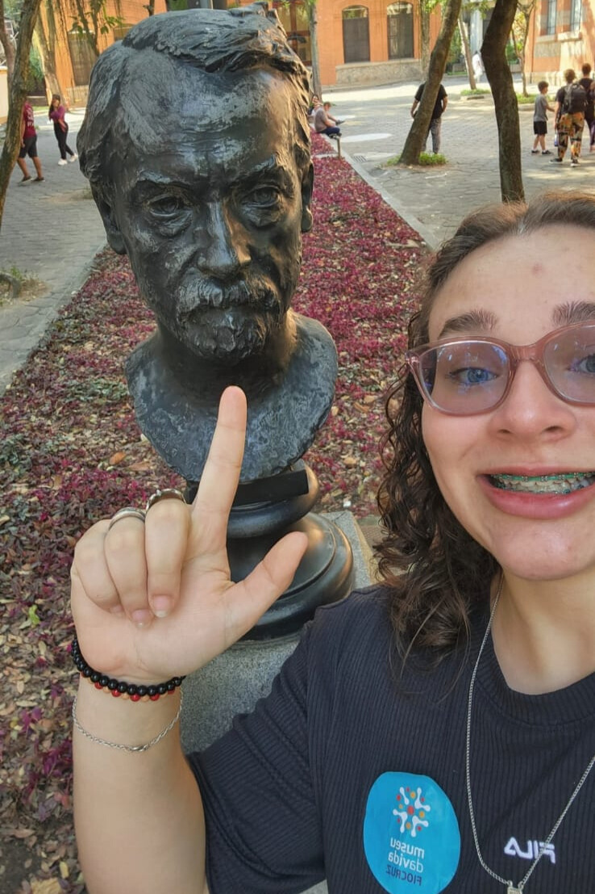

Sou estudante de Ciência da Computação na Universidade Veiga de Almeida, natural do Rio de Janeiro e
criada em Maricá. Antes de descobrir minha verdadeira vocação na tecnologia, dediquei alguns anos aos
estudos com o objetivo de ingressar em Medicina, experiência que fortaleceu minha disciplina e
dedicação aos estudos. Meu interesse por computação, no entanto, vem desde cedo, impulsionado pelo
contato com videogames e jogos de computador, que despertaram em mim a curiosidade de entender como a
tecnologia funciona por trás das telas.
Durante a pandemia tive meu primeiro contato com programação ao tentar aprender Python, e desde então
passei a explorar mais profundamente esse universo. Atualmente tenho estudado HTML, CSS e JavaScript,
desenvolvendo pequenos projetos para praticar. Tenho grande interesse nas áreas de desenvolvimento
full-stack e cibersegurança, e gosto especialmente do desafio de usar raciocínio lógico para resolver
problemas e construir soluções.
Sou uma pessoa curiosa e esforçada, motivada pela vontade de evoluir constantemente e construir um
futuro sólido para mim e para minha família. Acredito que a tecnologia pode ser uma ferramenta poderosa
para criar soluções que ajudem as pessoas, e sonho em construir uma carreira que me permita crescer
profissionalmente enquanto tenho a liberdade de trabalhar com tecnologia e conhecer diferentes lugares
do mundo. Fora da área de tecnologia, gosto de jogar videogame, praticar vôlei, ouvir música, assistir
filmes e séries, além de me interessar por política e cultura.

Durante meus estudos, desenvolvi:
HTML
CSS
JavaScript
PHP
MySQL
Git
GitHub